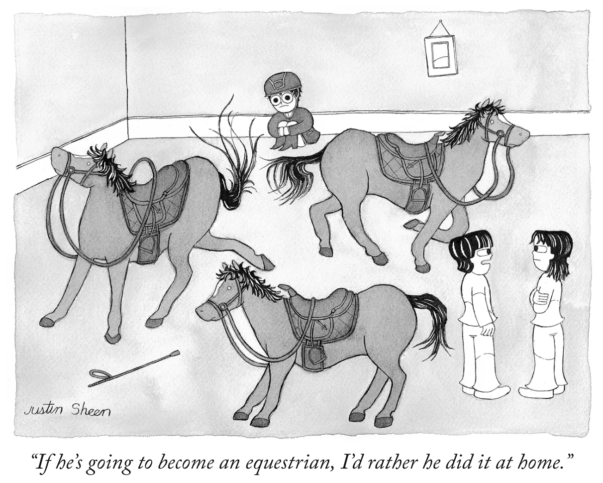

Justin Sheen (신기현; b. 1995) is a Korean-American single-panel cartoonist:
- 28 single-panel cartoons contributed to The New Yorker: link
- 4 single-panel cartoon e-books (60 single-panel cartoons): link
- 1 book (1 profile, 2 photographs, 2 reprinted single-panel cartoons): link
YouTube: https://www.youtube.com/@jsyc2o
Email: justin-sheen@hotmail.com
All drawings copyright © 2020-2026, Justin Sheen. All rights reserved.